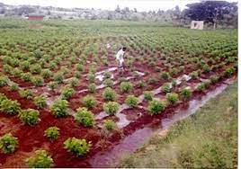

Introduction
Mulberry cultivation is the foundation of sericulture. Healthy mulberry leaves are essential for silkworm growth. Our platform guides farmers with modern practices, pest control methods, and harvesting techniques to ensure maximum yield and quality.
